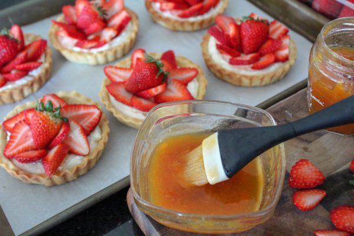

Vous aurez besoin de 2 pintes de fraises fraîches et d'un petit pot de confiture d'abricots.
Tout d'abord, j'ai préparé la pâte à tarte. Cette recette permet de réaliser 1 fond de tarte de 9 pouces ou 6 fonds de tarte individuels de 4 pouces. Doublez les quantités pour en obtenir davantage.
Ingrédients :
•1 gros jaune d'œuf
•1 cuillère à soupe de crème épaisse
•1/2 cuillère à café de vanille
•1 1/4 tasse de farine tout usage
•2/3 tasse de sucre glace
•1/4 cuillère à café de sel
•8 cuillères à soupe de beurre non salé froid, coupé en cubes de 1/2 pouce
Fouettez ensemble le jaune d'œuf, la crème et la vanille. Mettez de côté.
Combinez la farine, le sucre et le sel dans un grand bol à mélanger. Remuez ensemble.
Ajoutez le beurre coupé en cubes et coupez-le avec un coupe-pâte jusqu'à obtenir un
mélange grossier. Versez cela dans un bol de mixeur sur socle, avec un accessoire de
palette.
Versez le mélange d'œufs sur le mélange de farine. Mélangez à vitesse moyenne juste
jusqu'à ce que la pâte se rassemble. Transférez sur une planche à découper et pessez
pour former un disque de 6 pouces. Enveloppez dans du plastique et réfrigérez
pendant environ 1 heure.
Ensuite, préparez la garniture au fromage à la crème.
Ingrédients :
•340 g de fromage à la crème, à température ambiante
•90 g de sucre glace
•1 cuillère à café d'extrait de vanille
•3 cuillères à soupe de crème épaisse
Dans un bol de mélange, à l'aide d'un accessoire de palette, mélangez ensemble le
fromage à la crème et le sucre. Ajoutez la crème épaisse et la vanille, et mélangez
jusqu'à obtenir un mélange lisse.
Réfrigérez.
Maintenant, préparez les fonds de tarte. Vaporisez le moule à tarte avec un spray de
cuisson. Retirez la pâte du réfrigérateur. Placez-la sur une surface farinée et étalez-la
en un cercle de 13 pouces. Découpez des cercles de la taille de votre moule à tarte. J'ai
trouvé que le couvercle de mon conteneur de farine était parfait pour une tarte de 4
pouces ! Placez la pâte dans chaque moule à tarte. Elles devraient être au niveau du
haut du moule. Congelez pendant environ 20 minutes.
Préchauffez le four à 350 degrés Fahrenheit (175 degrés Celsius). Retirez les fonds de
tarte du congélateur. Placez un morceau de papier d'aluminium dans chaque fond de
tarte, puis remplissez avec des haricots secs ou des poids à tarte. Cela permettra non
seulement de garder le fond de tarte plat, mais aussi de maintenir les côtés en place
pendant la cuisson. Placez le moule à tarte sur une plaque à biscuits et faites cuire au
four pendant environ 20 minutes. Retirez le papier d'aluminium et les haricots/poids,
puis faites cuire jusqu'à ce qu'ils soient légèrement dorés pendant encore 3 à 5
minutes. Retirez du four et laissez refroidir complètement. Retirez délicatement
chaque fond de tarte à l'aide d'un couteau et placez-le sur une plaque à biscuits.
Maintenant, il est temps de construire les tartes. Commencez par la garniture au
fromage à la crème. J'ai utilisé une poche à douille pour couvrir le fond de la tarte. Vous
pouvez également utiliser une cuillère ou un couteau.
Maintenant, tranchez vos fraises et disposez-les comme vous le souhaitez. J'ai garni
celles-ci d'une fraise entière.
Badigeonnez les fraises avec un peu de confiture d'abricot réchauffée au micro-ondes.
Cela scellera les fraises et leur donnera un bel aspect brillant.

Réfrigérez. Ils resteront frais lorsqu'ils seront couverts de film plastique, pendant
environ 3 jours.